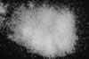

|
DOCUMENTATION_FORMAT: MINERAL
SAMPLE_ID: HS433.1B, HS433.2B, HS433.3B, HS433.4B, HS433.6
MINERAL_TYPE: Halide
MINERAL: Halite
FORMULA: NaCl
FORMULA_HTML: NaCl
COLLECTION_LOCALITY: Kansas
ORIGINAL_DONOR: Hunt and Salisbury Collection
CURRENT_SAMPLE_LOCATION: USGS Denver Spectroscopy Laboratory
ULTIMATE_SAMPLE_LOCATION: USGS Denver Spectroscopy Laboratory
SAMPLE_DESCRIPTION:
"H-4. Halite. Kansas (433B). Halite, NaCl, occurs primarily as extensive beds formed by evaporation of trapped bodies of salt water. It may also form as an efflorescence on the surface in arid areas, or as a sublimation product in volcanic regions. It is colorless when pure, but more typically orange or red, and may be gray, yellow or blue. The common orange or red color is due to inclusions of ferric oxide material, while the gray is due to inclusions of clay. Like many of the halides, halite is subject to color center formation, which is responsible for the blue and purple tints. This sample is colorless and appears to be quite pure. It displays some very weak water bands from water in fluid inclusions near 1.95 and 2.25 µ, but is otherwise spectrally featureless, except for the 0-5 µ particle size range. The distinct brownish tone of this size range is caused by polyurethane contamination from the fluid energy mill."
Hunt, G.R., J.W. Salisbury, and C.J. Lenhoff, 1972, Visible and near-infrared spectra of minerals and rocks: V. Halides, phosphates, arsenates, vanadates and borates. Modern Geology, v. 3, p. 121-132.
Grain size fractions are indicated by the extension after the sample number:
.1B = <5 µm
.2B = <74 µm
.3B = 74-250 µm
.4B = 250-1200 µm
.6 = cut slab
IMAGE_OF_SAMPLE:

END_SAMPLE_DESCRIPTION.
XRD_ANALYSIS:
40 kV - 30 mA, 6.5-9.5 keV
File: halt433.mdi, *.out (smear mount on quartz plate)
References: JCPDS #5-628; Huebner's internal standard listings
Found: Halite
Comment: Reflections symmetrical but not sharp and the alpha1-alpha2 splitting
is not distinct; the degree of crystallization is only moderate. Lattice spacing's
are consistent with NaCl composition (and inconsistent with (Na,K)Cl solid solution.
J.S. Huebner, J. Pickrell, and T. Schaefer, 1994, written communication.
END_XRD_ANALYSIS.
COMPOSITIONAL_ANALYSIS_TYPE: None # XRF, EPMA, ICP(Trace), WChem
COMPOSITION_TRACE:
None
COMPOSITION_DISCUSSION:
None
END_COMPOSITION_DISCUSSION.
MICROSCOPIC_EXAMINATION:
average grain size= 230 µm
Grains isotropic with cubic cleavage. Grains also have abundant (8 vol%) fluid or gas inclusions, and the grains are soluble in water. All this is consistent with this sample being pure salt.
END_MICROSCOPIC_EXAMINATION.
SPECTROSCOPIC_DISCUSSION:
END_SPECTROSCOPIC_DISCUSSION.
SPECTRAL_PURITY: 1a2_3_4_ # Halite HS433.1B # 1= 0.2-3, 2= 1.5-6, 3= 6-25, 4= 20-150 microns
SPECTRAL_PURITY: 1a2_3_4_ # Halite HS433.2B # 1= 0.2-3, 2= 1.5-6, 3= 6-25, 4= 20-150 microns
SPECTRAL_PURITY: 1a2a3a4u # Halite HS433.3B # 1= 0.2-3, 2= 1.5-6, 3= 6-25, 4= 20-150 microns
SPECTRAL_PURITY: 1a2_3_4_ # Halite HS433.4B # 1= 0.2-3, 2= 1.5-6, 3= 6-25, 4= 20-150 microns
SPECTRAL_PURITY: 1a2_3_4_ # Halite HS433.6 # 1= 0.2-3, 2= 1.5-6, 3= 6-25, 4= 20-150 microns
{kind=link}